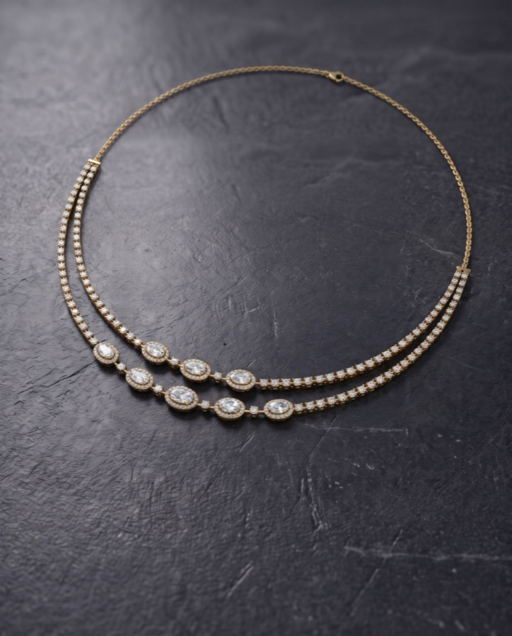
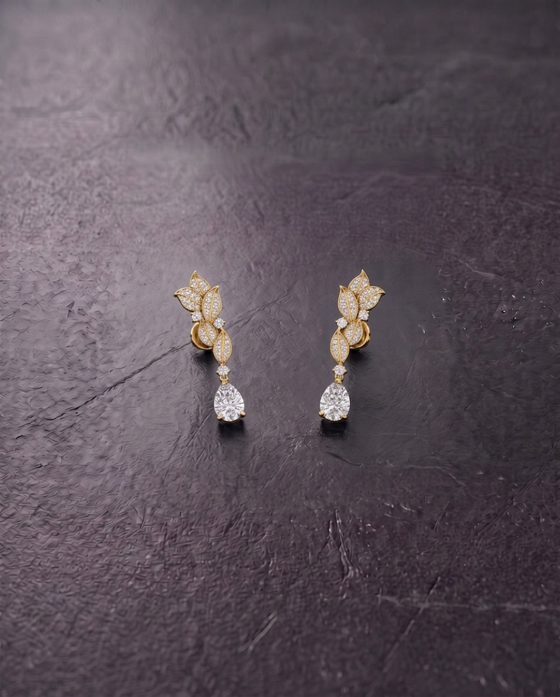
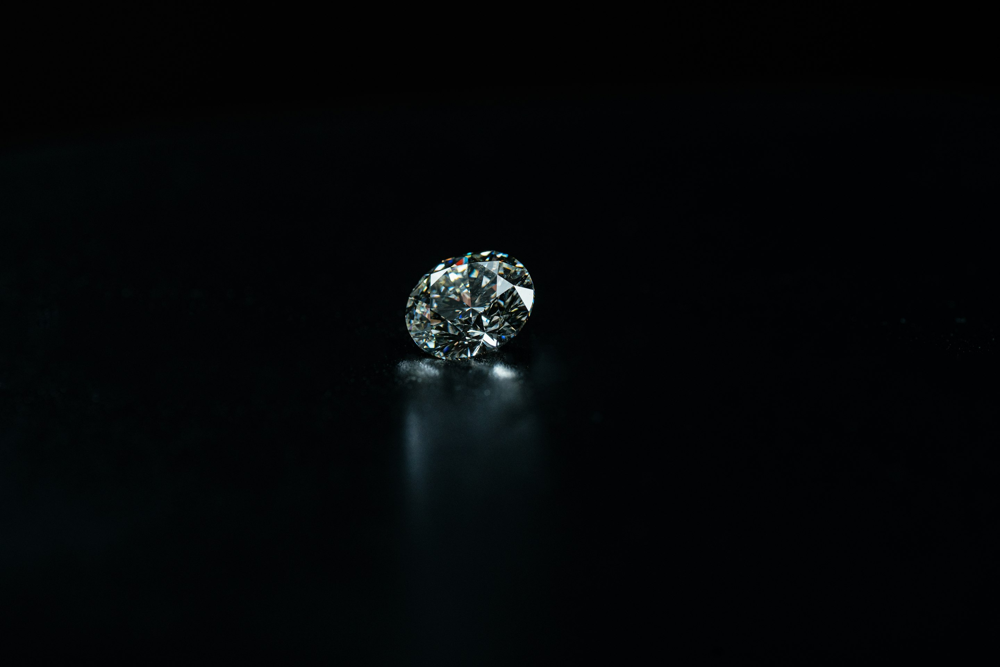
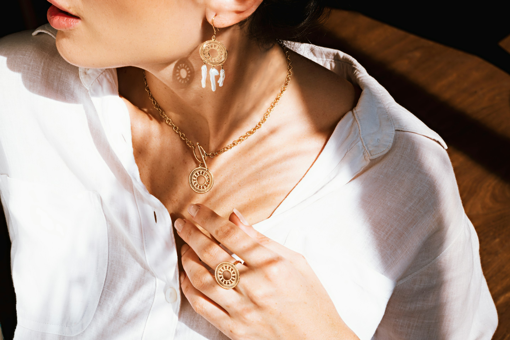

Iconec homepage builds
A · Story first
White and calm, the story told step by step
A6 · Passed on
Warm paper, each piece's record of who wore it

A7 · Into focus
Quiet and focused, after augen.pro

A8 · Clean cut
White and crisp, after shopify.design

A9 · Fire
Dark, editorial, after topology.vc

A10 · Warm table
Warm and photo-led, after bridgingtables.com